網頁版
提示
網頁版僅支援以下瀏覽器:
- Chrome
- Edge
- Firefox
- Internet Explorer 11或以上
- Safari
若遇上任何問題，請先嘗試更新你的瀏覽器。
前往https://app.plex.tv或伺服器的地址(請問伺服器擁有人)。
請確定左上是Avalon Plex。若不是的話請選回，指定的伺服器。
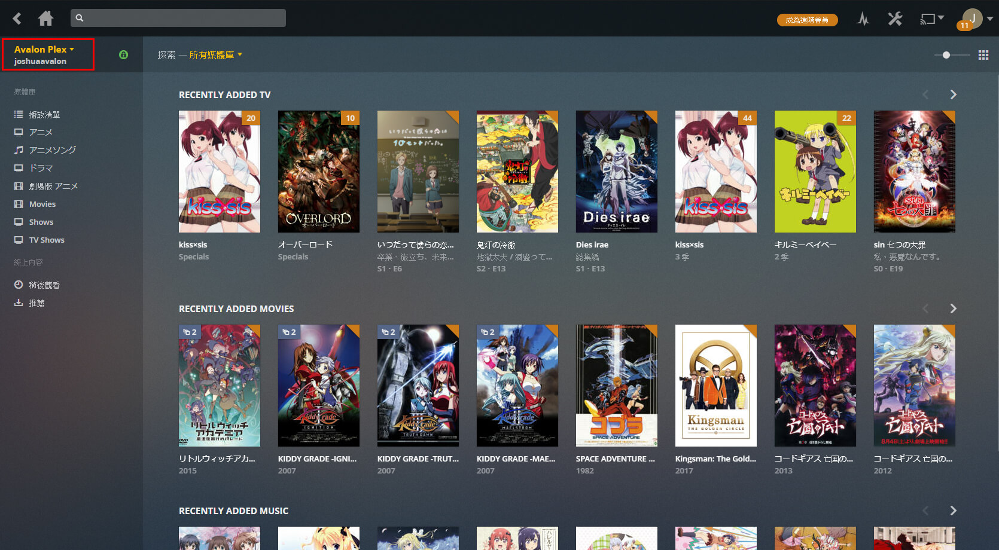
警告
請不要在手機上使用網頁版。網頁版是為電腦而設。手機請用專屬的應用程式。
首次設定
點擊右上角的設定 。
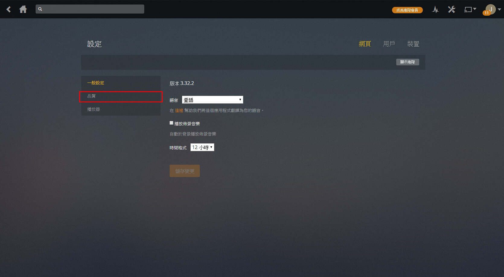 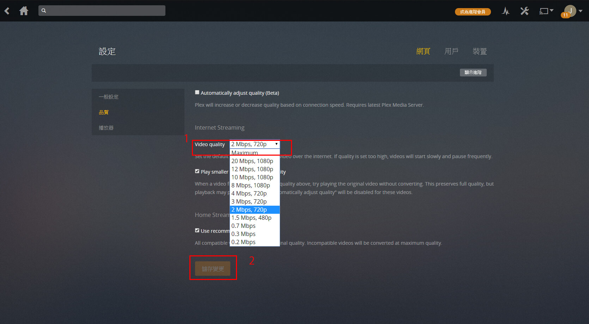
請確定右上已選網頁。左面選擇品質，然後在Video quality選擇Maximum。最後按下方的儲存變更。
其他設定請參考下方的設定解說。
介面介紹
首頁
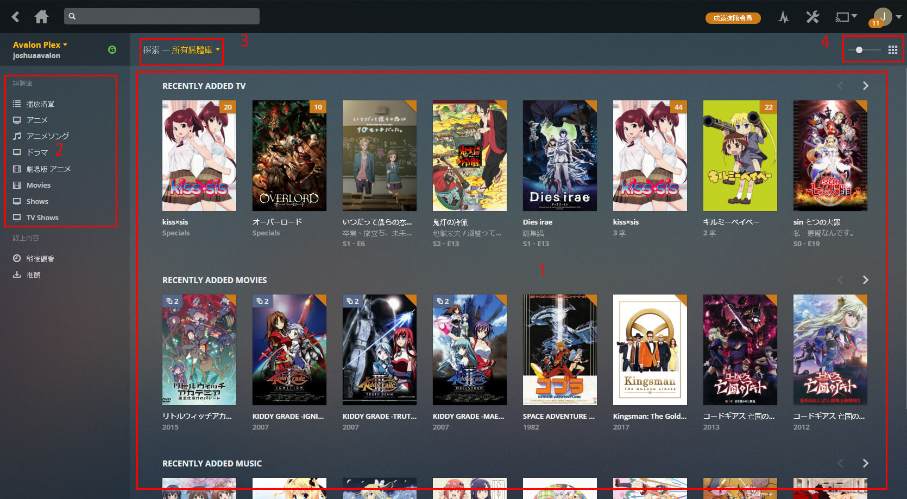
- 最近新增內容。以種類分行，你有未看完的系列的話將會多一行
ON DECK。圖片右上角的橙式代表未觀看的集數，左上角代表版平的數目，圖片下方為 系列名稱，及更新內容(TV)或年份(Movie)。S1．E6代表第一季第6集，多於一集的話將顯示季度名稱。 - 按媒體庫瀏覽內容。
- 按媒體庫瀏覽新增的內容。
- 調整圖片的大小。
媒體庫
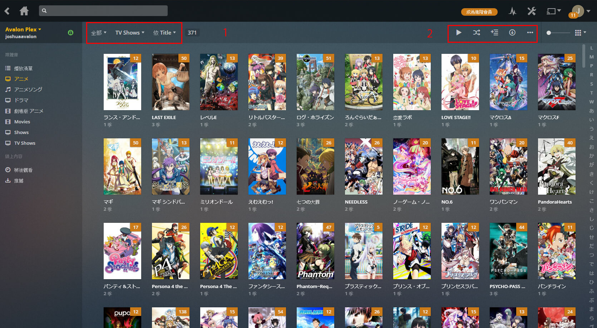
- 排序或過濾媒體庫的內容
系列
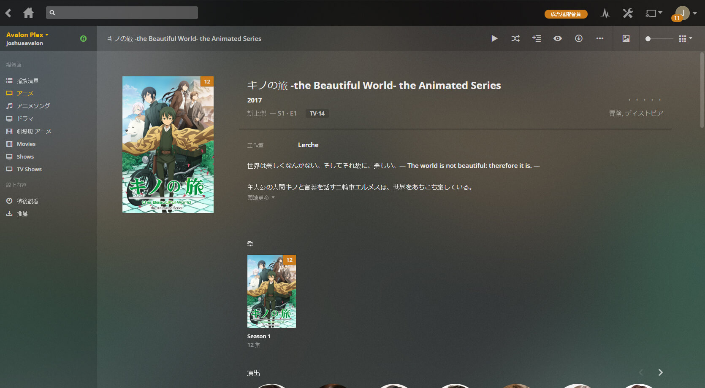
季度
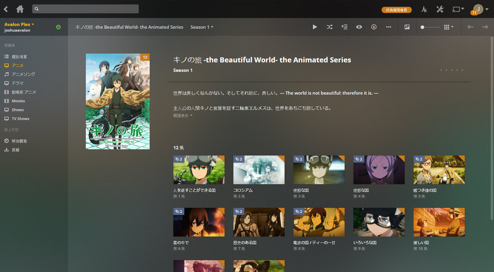
集數
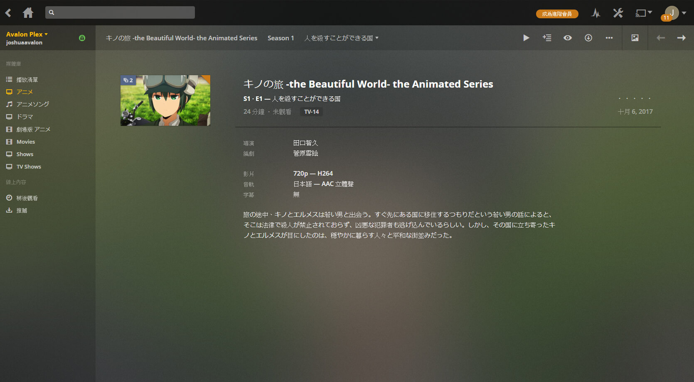
於右上…選擇播放版本。
播放器
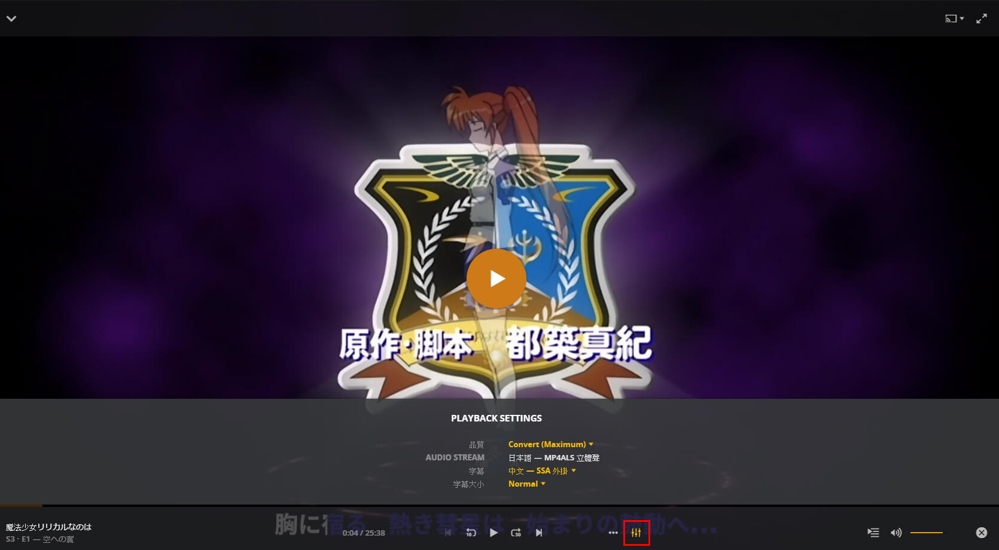
於下方選擇聲道及字幕。
設定解說
以下將會詳細解說每項設定。
提示
你必須按儲存變更設定才會生效。
一般設定
點擊右上的網頁後，點擊左面一般設定。
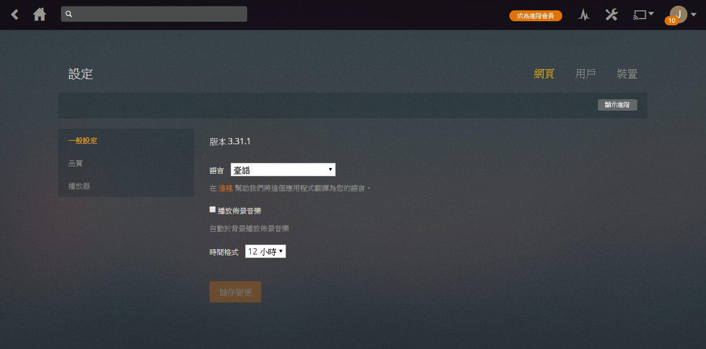
版本
此為當前網頁版的版本，並非伺服器的版本。
語言
選擇介面顯示語言，並非影片的語言。建議選擇臺語或English。
播放佈景音樂
本伺服器不支援佈景音樂。勾選後也不會生效。
時間格式
選時間的顯示格式:12小時制或24小時制。
品質
點擊右上的網頁後，點擊左面品質。
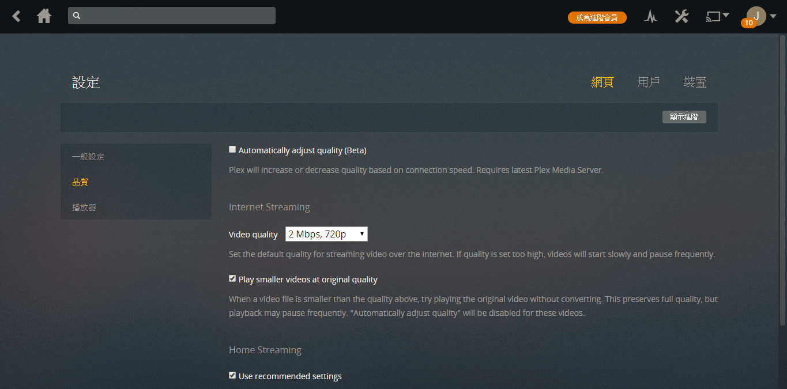
Automatically adjust quality (Beta)
讓Plex自動調節品質。因為功能未完善不建議勾選
Video quality
選擇預設播放品質。請選Maximum(最高)。
Play smaller videos at original quality
請勾選。 勾選此選項即使未夠位元速率時，也會以原畫質播放。
Use recommended settings
請勾選。此選項等同在Lan時選擇最高品質。但理論上你不會在伺服器的Lan上，所以不會有分別。
播放器
點擊右上的網頁後，點擊左面播放器。
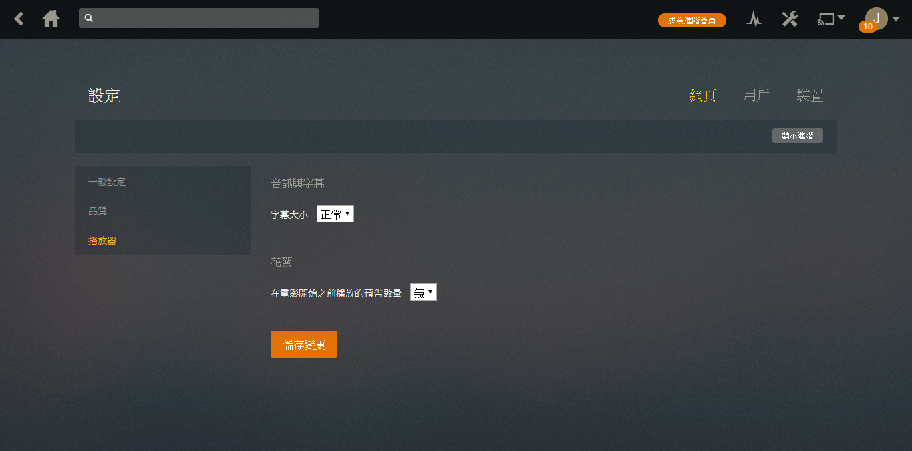
字幕大小
此選項僅對外掛字幕有效。(你可以選擇字幕的影片)
花絮
在播放電影前，播放其他你未看過在同一媒體庫的花絮。
進階設定
警告
一般情況下你不需要更改進階設定。請在修改前知道你在修改甚麼
點擊右上的網頁後，點擊左面一般設定。點擊右上顯示進階。
一般設定
當作播放器
當你時用其他客戶端時，可以將內容傳輸到此播放。
允許後援至不安全連線
允許非SSL連線。建議永不
除錯
除錯層級
開啟Debug log。
直接播放
建議勾選。不勾選的話，將不必要加重伺服器負荷。
直接串流
建議勾選。不勾選的話，將不必要加重伺服器負荷。
播放器
多聲道音量增加
請按喜好選擇。
燒錄字幕
選擇自動的話，目前僅srt字幕會不燒錄字幕。不燒錄字的話，在視窗比例不合影片時，字幕會出現於影片以外的地方。